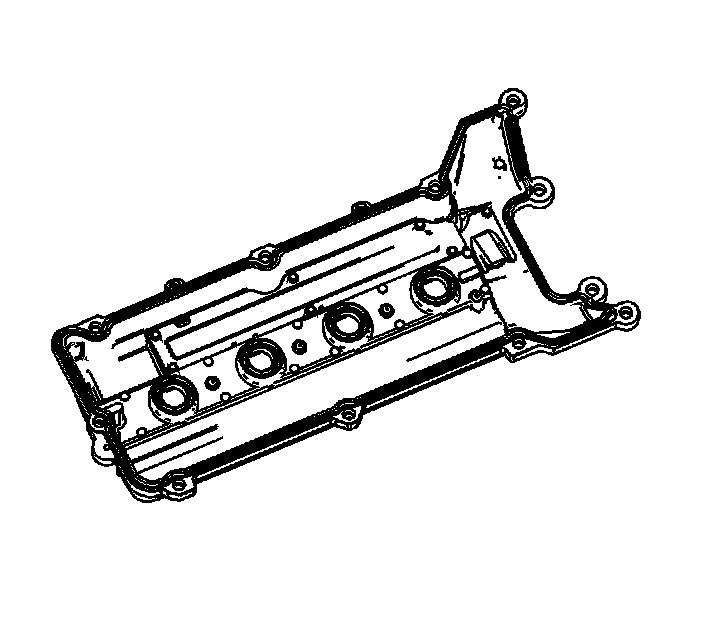
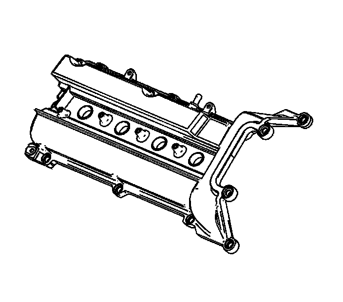
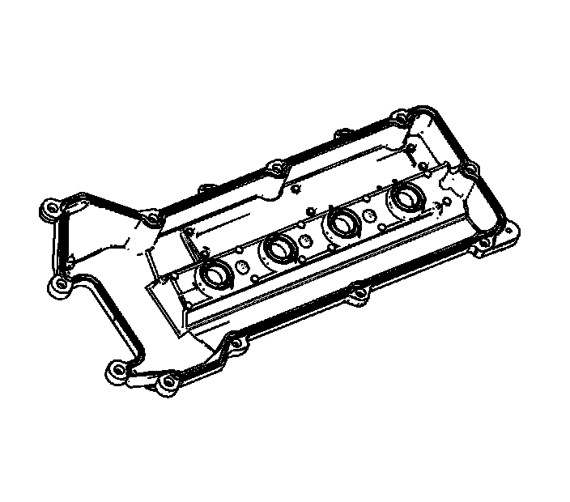

85. Camshaft Cover Cleaning and Inspection
Camshaft Cover Cleaning and Inspection
Cleaning Procedure
1. Clean the camshaft cover in solvent.
Caution: Refer to Safety Glasses Caution (Safety Glasses Warning) .
2. Dry the camshaft cover with compressed air.
Inspection Procedure

1. Inspect the exterior of the left camshaft cover for the following:
* Dents or damage
A dented or damaged cover may:
- Leak oil
- Effect crankcase ventilation
- Interfere with the camshafts
- Interfere with the ignition coil sealing
- Allow water, condensation, or debris to enter the engine
* Damaged threads for the ignition coils or ground straps
* Damaged camshaft cover bolt holes
* Damaged threads for the oil fill cap
* Damaged PCV tube fitting
* Damaged holes for the wiring harness retainers

2. Inspect the interior of the left camshaft cover for the following:
* Damaged, loose or missing baffle
* Damaged, loose or missing baffle fasteners
* Restrictions to the ventilation system passages
* Damaged or warped seal groove for the camshaft cover seal and/or spark plug port seals

3. Inspect the exterior of the right camshaft cover for the following:
* Dents or damage
A dented or damaged cover may:
- Leak oil
- Effect crankcase ventilation
- Interfere with the camshafts
- Interfere with ignition coil sealing
- Allow water, condensation or debris to enter the engine
* Damaged threads for the ignition coils or ground straps
* Damaged camshaft cover bolt holes
* Damaged PCV tube orifice fitting
* Damaged holes for the wiring harness retainers

4. Inspect the interior of the right camshaft cover for the following:
* Damaged, loose or missing baffle
* Damaged, loose or missing baffle fasteners
* Restrictions to the ventilation system passages
* Damaged or warped seal groove for the camshaft cover seal and/or spark plug port seals
5. Inspect the following related camshaft cover components for damage:
* Oil fill cap
* PCV clean air tube
* PCV dirty air tube
* Camshaft cover bolts and grommets
* Ground straps and bolts
* Ignition coil bracket assembly and wiring harness
6. Repair or replace the camshaft cover and/or components as necessary.